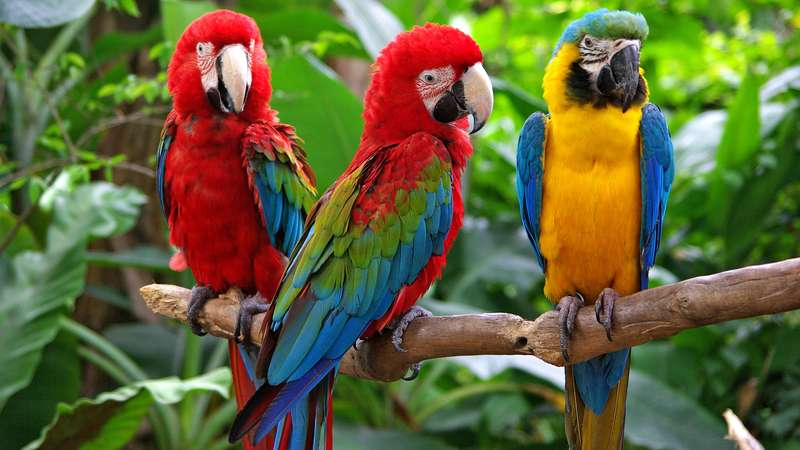
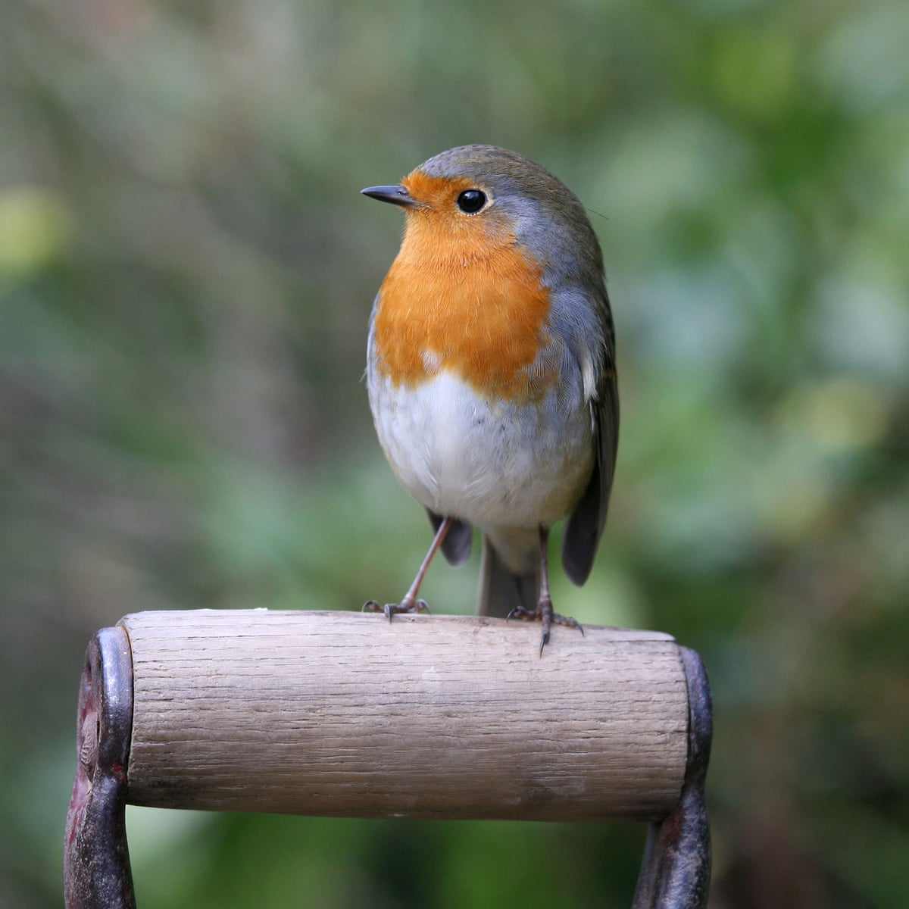
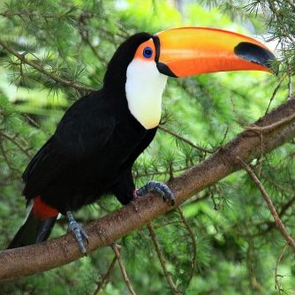

The common ostrich or simply ostrich, is a species of large flightless bird native to certain large areas of Africa. Ostriches can reach speeds od 70 km/h when running. Their egg is also the lagest of any type of animal.

There are around 372 different parrot species. Most parrots live in tropical areas. Parrots have curved beaks, strong legs and clawed feet. Parrots are often brightly coloured. Parrots are believed to be one of the most intelligent bird species. Some species are known for imitating human voices.
There are around 372 different parrot species. Most parrots live in tropical areas. Parrots have curved beaks, strong legs and clawed feet. Parrots are often brightly coloured. Parrots are believed to be one of the most intelligent bird species. Some species are known for imitating human voices.
Eagles are large, powerful birds of prey. Eagles have large, hooked beaks. Eagles have excellent eyesight. Eagles have powerful talons which help them catch prey. There are over 60 different species of eagle.

The robin in a common bird, mostly associated with the winter season. They live around 13 months in captivity.
The robin in a common bird, mostly associated with the winter season. They live around 13 months in captivity.

Ducks are mostly aquatic birds living in both fresh water and sea water and found on every continent except for Antarctica. They are probably the most well known bird.

Toucans are renown for their large colorful bills. At 20 cm they have the longest bill of any bird in the world in relation to their body size.
Toucans are renown for their large colorful bills. At 20 cm they have the longest bill of any bird in the world in relation to their body size.